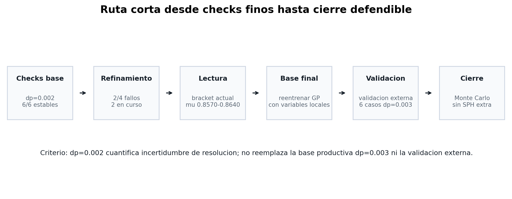

Cierre metodológico
Con los checks base dp=0.002 completos y el refinamiento fino parcialmente observado, el estado técnico se organiza en cuatro bloques: cerrar el bracket fino, actualizar el GP, validar externamente y ejecutar Monte Carlo.
Resumen corto
- Checks base
- 6/6 dp=0.002 todos ESTABLE
- Refinamiento fino
- 2/4 2 FALLO, 2 en curso
- Bracket actual
- 0.8570-0.8640 H=0.225, m*=1.00
- Cambios clase
- 4/6 banda de resolución
- Validación externa
- 6 sims validación formal dp=0.003
- Monte Carlo
- 0 SPH corre sobre GP final
- GP local actual
- 0.861 accuracy LOO preliminar
Los checks base muestran sensibilidad de resolución cerca del umbral: seis casos quedaron ESTABLES en dp=0.002. El refinamiento posterior ya detectó dos FALLO en H=0.225, m*=1.00, por lo que la frontera fina parcial queda entre mu=0.8570 y mu=0.8640.
Secuencia metodológica


Escenarios restantes
Si los dos casos restantes fallan
La frontera queda muy cerca del estable mu=0.8640. Eso entrega un bracket fino estrecho y suficiente para cerrar esta fase.
Si alguno estabiliza
El bracket queda cerrado dentro de los puntos intermedios. El resultado se usa como evidencia de sensibilidad de resolución y no cambia la resolución productiva principal.
Cierre probabilístico
La probabilidad de falla se calcula sobre el GP final. La validación externa mide desempeño fuera del entrenamiento y el Monte Carlo propaga la incertidumbre del modelo en el espacio de variables.
Los casos dp=0.002 cuantifican sensibilidad de resolución cerca del umbral; la validación externa y Monte Carlo cuantifican desempeño e incertidumbre probabilística.